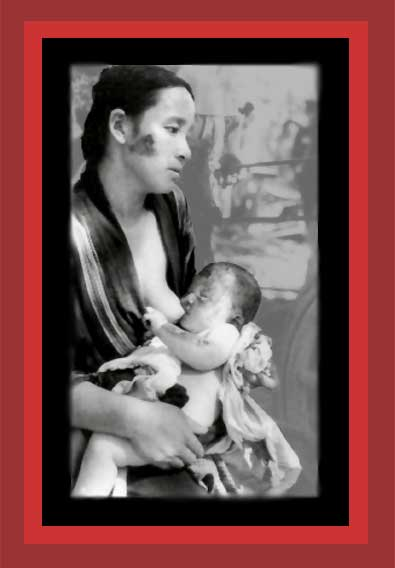

|
During World War II the United States indiscriminately bombed enemy cities, the A-bombs dropped on Hiroshima and Nagasaki being the worst. About 105,000 Japanese were killed in Hiroshima or died from injuries and radiation afterwards, 60,000 in Nagasaki. All this was democide. In this photograph this injured Hiroshima mother and her baby wait for medical treatment. The baby, too weak to suckle, died in ten days. Documentation: Statistics of Democide. Source: unknown.
Return to Photographs of Democide, Room 3 Home |